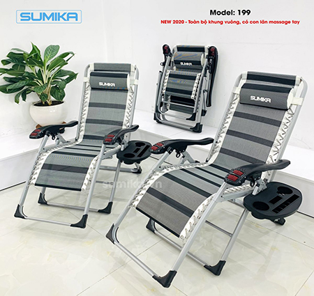

Top 5 ghế xếp thư giãn ngủ trưa SUMIKA phù hợp với dân văn phòng
Trong cuộc sống hiện đại, ghế xếp thư giãn đang dần trở thành một người bạn đồng hành cho tất cả mọi người, đặc biệt là dân văn phòng. Nếu bạn đang có nhu cầu chọn mua chiếc ghế xếp thư giãn ngủ trưa văn phòng cao cấp cùng mức giá cả phù hợp, hãy tham khảo ngay bài viết đây với top 7 ghế xếp thư giãn phù hợp nhất!
1. Lý do dân văn phòng nên lựa chọn ghế xếp thư giãn
1.1. Khả năng gấp gọn giúp tiết kiệm không gian
Hầu hết những chiếc ghế xếp thư giãn ngủ trưa hiện nay đều sở hữu thiết kế thông minh với khả năng gấp gọn khi không sử dụng, giúp tiết kiệm không gian một cách đáng kể, rất phù hợp cho dân văn phòng.
1.2. Giúp bạn có thể thư giãn và nghỉ ngơi
Khối lượng công việc nhiều khiến cho mọi người ít có thời gian nghỉ ngơi. Một chiếc ghế xếp thư giãn đa năng sẽ giúp bạn tận hưởng được khoảng thời gian nghỉ trưa ít ỏi, để có thể trải nghiệm sự thoải mái và giảm căng thẳng.
Thay vì việc dân văn phòng thường xuyên ngủ gục trên bàn khiến xương khớp bị lão hóa, ảnh hưởng đến tư thế và dáng người khi về già. Vậy nên, việc lựa chọn một chiếc ghế xếp thư giãn ngủ trưa văn phòng để có được một giấc ngủ thoải mái và đảm bảo nhất nhé.
2. Top 5 ghế xếp thư giãn ngủ trưa văn phòng SUMKA tốt nhất hiện nay
2.1. Ghế xếp thư giãn SUMIKA 179A
Dòng ghế xếp thư giãn SUMIKA 179A sở hữu thiết kế tiện lợi, được nhiều người ưa thích. Bên cạnh đó, ưu điểm nổi bật của chiếc ghế này chính là phần khung ghế tròn cùng với khóa kim loại, cho cảm giác sang trọng hơn dù đặt trong bất kỳ không gian nào. Sản phẩm được sơn tĩnh điện bên ngoài nên rất an toàn cho người dùng trong các điều kiện môi trường khác nhau.
Ghế có khả năng chống oxy hóa tốt, chịu được va đập mạnh, không bị méo móp khi bị tác dụng lực từ bên ngoài.
Bề mặt ghế được làm từ chất liệu vải công nghiệp Textilene cao cấp, với độ mềm mại cao, chịu nhiệt tốt, cho người dùng sự thoải mái và nâng niu khi thư giãn. Phần tay cầm bằng nhựa được thiết kế tiện lợi, bảo vệ người dùng một cách tốt nhất để không bị té ngã hay thay đổi tư thế trong khi ngủ.
2.2. Ghế xếp thư giãn SUMIKA 199
Ghế xếp thư giãn SUMIKA 199 có mức tải trọng lên đến 300kg, một trong những điểm đặc biệt mà ít có chiếc ghế nào trên thị trường sở hữu. Kích thước mở tối đa là 180x67x40cm nên bạn có thể sử dụng ghế ở nhiều tư thế khác nhau, hoàn toàn yên tâm thư giãn mà không lo bị rung lắc hay gãy ghế.

2.3. Ghế xếp thư giãn SUMIKA 179B
Ghế xếp thư giãn SUMIKA 179B được đánh giá là một trong những sản phẩm gần gũi với cuộc sống hiện đại, với nhiều tư thế ghế khác nhau, đáp ứng nhu cầu người dùng sau những giờ phút làm việc mệt mỏi.
Điểm nhấn của chiếc ghế này chính là khóa kim loại giúp cố định tư thế ghế cho người dùng ở trạng thái thoải mái nhất. Cùng với khả năng xếp gọn dễ dàng, nên người dùng có thể dễ dàng mang vác ghế đến những nơi khác nhau trở nên đơn giản hơn rất nhiều.
Bên cạnh đó việc bảo quản ghế cũng không chiếm của bạn quá nhiều diện tích.
2.4. Ghế xếp thư giãn SUMIKA 139
Ghế xếp thư giãn SUMIKA 139 là dòng ghế thư giãn hiện đại, được làm từ chất liệu cao cấp, an toàn đối với mọi đối tượng sử dụng, nâng niu bạn và người thân trong quá trình thư giãn, nghỉ ngơi, đọc sách, xem phim.
Điểm nhấn đặc biệt của ghế xếp thư giãn SUMIKA 139 chính là phần đệm lót sang trọng với chất vải mát, không gây cảm giác bí khi ngồi, mang đến sự thư thái cho người dùng.
2.5. Ghế xếp thư giãn SUMIKA 179M
Ghế xếp thư giãn SUMIKA 179M sở hữu thiết kế tiện dụng và sang trọng cùng với trang bị nệm và khay để đựng ly.
Đồng thời, chúng ta không thể không kể đến đó chính là khả năng điều chỉnh ghế sao cho phù hợp với cơ thể khi ngồi hoặc nằm. Phần chân của chiếc ghế xếp thư giãn cao cấp này được bao bọc bởi lớp cao su giúp ghế có thể đứng vững hơn dù ở trên địa hình gập ghềnh hay nền nhà trơn trượt.
Với thiết kế vải lưới Textilene có khả năng chống nước tốt, dày dặn giúp bạn thoải mái thư giãn. Kết hợp với đó là gam màu xám đơn giản nhưng lại vô cùng sang trọng và hiện đại, cho người dùng một trải nghiệm hoàn toàn mới.
Phần khung ghế được thiết kế một cách chắc chắn, có thể chịu lực lên đến 300kg cùng với phần chân rộng sẽ giúp cho bạn nằm hẳn lên trên ghế mà không lo bị gập khó chịu.
Các tin khác